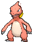

-
Bulbasaur #001
- Planta
- Venenoso
Bulbasaur é um Pokémon do tipo Grama/Veneno e é o primeiro estágio da linha evolutiva dos iniciais de Kanto. Ele possui uma semente nas costas, que cresce junto com ele. Essa semente, conhecida como bulbassauro, fornece nutrientes e energia para o Pokémon. Bulbasaur tem a capacidade de absorver energia solar através do bulbassaur, o que lhe permite realizar movimentos poderosos.
-
Ivysaur #002
- Planta
- Venenoso
Ivysaur é a evolução de Bulbasaur. Nessa forma, ele cresce e desenvolve uma flor maior em seu bulbassauro. Ivysaur é capaz de liberar um aroma adocicado para acalmar seus oponentes e tem habilidades de controle da planta.
-
Venusaur #003
- Planta
- Venenoso
Venusaur, o Pokémon Flor. Venusaur é a forma final de Bulbasaur. Sua aparência majestosa é marcada por uma grande flor florescendo em seu bulbossauro. Suas costas são cobertas por um denso e resistente casco, proporcionando uma excelente defesa. Através de seu corpo, Venusaur é capaz de absorver a energia solar e convertê-la em poderosos ataques de plantas. Ele emite um aroma doce e calmante que acalma aqueles ao seu redor. Venusaur é conhecido por sua serenidade e paciência, mas pode se tornar um adversário formidável quando provocado. Sua Mega Evolução amplia ainda mais suas habilidades, fortalecendo sua defesa e controle sobre a vegetação.
-
Mega Venusaur #???
- Planta
- Venenoso
A mega evolução de Venusaur ocorre através da utilização da Venusaurite. Mega Venusaur apresenta uma aparência mais imponente, com uma flor maior e mais colorida em seu bulbassauro. Sua defesa e resistência são ampliadas, tornando-o um tanque formidável. Além disso, suas habilidades de controle de plantas são aprimoradas, permitindo-lhe manipular a vegetação ao seu redor de forma ainda mais poderosa.
-
Charmander #004
- Fogo
Charmander é um Pokémon do tipo Fogo e é conhecido por sua chama queimando em sua cauda. Essa chama é um indicador de sua vitalidade e saúde. Charmander é um Pokémon ágil e tem a capacidade de lançar chamas poderosas como ataques.
-
Charmeleon #005
- Fogo
Charmeleon é a evolução de Charmander. Nessa forma, ele se torna mais poderoso e agressivo. Charmeleon possui garras afiadas e uma cauda forte, que ele usa para atacar seus oponentes. Sua chama na cauda também se torna maior e mais brilhante.
-
Charizard #006

- Fogo
Charizard, o Pokémon Chama. Charizard é a forma final de Charmander. Com suas asas poderosas, ele é capaz de voar pelos céus em altas velocidades. Seu corpo é envolvido por escamas duras e resistentes ao fogo, oferecendo proteção contra ataques. Charizard possui uma chama ardente em sua cauda, que queima mais brilhante à medida que sua força aumenta. Ele é um mestre do voo acrobático e pode executar ataques ferozes de fogo, incinerando seus oponentes.
-
Mega Charizard X #???
- Fogo
- Dragão
A mega evolução de Charizard acontece com o uso da Charizardite X. Mega Charizard X adquire o tipo adicional Dragão, conferindo-lhe uma aparência mais robusta e escamosa. Sua força física é ampliada, tornando-o um combatente formidável. Ele ganha a habilidade Tough Claws, que aumenta o poder de seus ataques físicos. Seus ataques de fogo também são fortalecidos, permitindo que ele desencadeie chamas intensas sobre seus oponentes.
-
Mega Charizard Y #???
- Fogo
A outra opção de mega evolução para Charizard é obtida com a Charizardite Y. Mega Charizard Y mantém seu tipo original de Fogo/Voador, mas sua aparência se torna mais elegante e suas asas se expandem. Suas estatísticas de Ataque Especial e Velocidade são aprimoradas, permitindo-lhe executar ataques de fogo devastadores com grande velocidade. Além disso, ele recebe a habilidade Drought, que intensifica a luz do sol no campo de batalha.
-
Squartle #007
- Agua
Squirtle é um Pokémon do tipo Água e é conhecido por sua concha nas costas. Ele é um excelente nadador e pode mergulhar em águas profundas sem problemas. Squirtle usa sua cauda poderosa para nadar rapidamente e pode lançar jatos d'água como ataques.
-
Wartortle #008
- Agua
Wartortle é a evolução de Squirtle. Nessa forma, ele se torna um Pokémon mais robusto e desenvolve garras afiadas em suas patas. Wartortle é conhecido por seu casco resistente, que oferece proteção contra ataques físicos e pode ser usado para desferir golpes poderosos
-
Blastoise #009
- Agua
Blastoise, o Pokémon Marisco. Blastoise é a forma final de Squirtle. Com seu imenso casco d'água nas costas, ele pode disparar jatos poderosos de água com precisão e força incríveis. Sua concha é extremamente resistente, oferecendo proteção tanto em batalhas ofensivas quanto defensivas. Blastoise é um nadador ágil e pode mergulhar nas profundezas do oceano sem esforço. Ele é conhecido por sua natureza calma e protetora, defendendo ferozmente seus aliados.
-
Mega Blastoise #???
- Agua
A mega evolução de Blastoise é ativada com o uso da Blastoisinite. Mega Blastoise desenvolve canhões d'água ainda maiores e mais poderosos em seu casco. Seus ataques de jato de água se tornam ainda mais devastadores, sendo capazes de perfurar até mesmo materiais resistentes. Sua defesa e ataque especial também são aprimorados, tornando-o uma força formidável no campo de batalha.
-
Caterpie #009
- Inseto
Caterpie, o Pokémon Minhoca. Caterpie é uma pequena larva que se camufla entre a vegetação usando a coloração de seu corpo. Sua principal defesa é liberar um cheiro desagradável quando se sente ameaçado. Ele se alimenta de folhas e cresce rapidamente. Apesar de sua aparência frágil, Caterpie possui a habilidade de enrolar seu corpo e se proteger dos predadores. Ele passa a maior parte de sua vida em busca de comida e evolui para Metapod. Embora seja considerado fraco em batalhas, Caterpie pode se tornar uma Butterfree poderosa se for treinado adequadamente.